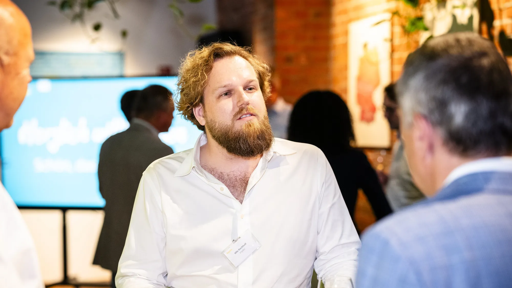

Ein Dachdecker wechselt die Software. Ohne eine einzige Excel-Liste.
Branchensoftware wechseln im Handwerk – Datenmigration aus der Datenbank und Angebote aus dem Drohnenaufmaß
Die alte Software hatte keine Schnittstelle, der Wechsel drohte zur Excel-Schlacht zu werden. Heute zieht H&L Bedachungen direkt aus der Datenbank um, und Angebote entstehen aus dem Drohnenaufmaß.

Wenn ein Handwerksbetrieb seine Software wechseln will, kommt fast immer derselbe Satz: „Und dann müssen wir alles in Excel-Listen übertragen?" Genau diese Sorge hatte auch H&L Bedachungen. Heute weiß der Betrieb: Nein, muss er nicht.
Einleitung: Die alte Software lässt nichts raus
H&L Bedachungen ist ein Dachdeckermeisterbetrieb vom Niederrhein. Die bisherige Branchensoftware M-SOFT und die Zeiterfassung sollten abgelöst werden. Nach einem Vergleich mehrerer Lösungen fiel die Wahl auf Robaws, eine Cloud-Software für Handwerksbetriebe.
Das Problem: M-SOFT bietet keine Schnittstelle. Eine Übernahme der Daten ging also nur über Exporte nach Excel oder direkt auf Datenbankebene. Excel hätte bedeutet: Kunden, Artikel, Stücklisten und Vorgänge Zeile für Zeile übertragen. Bei Jahrzehnten Betrieb ist das kein Projekt, das ist eine Strafe.
Was heißt „Datenmigration aus der Datenbank"?
Statt die Software zu fragen, was sie herausgibt, schauen wir direkt in ihre Datenbank. Vor Ort haben wir eine Sicherung gezogen und analysiert: Welche Tabelle enthält Kunden, welche Artikel, wo stehen Angebote, Aufträge, Rechnungen, wo die Kalkulation mit Material, Lohn und Stunden?
Danach war klar: Die Daten lassen sich übernehmen, und die Robaws-Schnittstelle kann lesen und schreiben. Als wir H&L am Bildschirm gezeigt haben, wie Kunden, Artikel und Angebote testweise in Robaws auftauchen, war die größte Sorge vom Tisch.
So machen wir es: Probelauf, Protokoll, dann produktiv
1. Testimport. Der komplette Firmenstamm und alle Vorgänge aus 2025 und 2026 gehen zuerst in einen Testmandanten. Mit Trockenlauf, Protokoll und Schutz vor Dubletten. Robaws erlaubt 10.000 Anfragen pro Tag und Mandant, also läuft der Import in Blöcken über mehrere Tage. Am Ende stehen eine Liste der Bruchstellen und einzelne Referenzvorgänge, die wir Position für Position mit M-SOFT verglichen haben. Sie stimmen überein.
2. Produktivlauf. Übernommen werden Einheiten, Artikel und Leistungen mit Stücklisten, Lieferanten, Kunden mit Ansprechpartnern und Objektadressen. Dazu die Vorgänge als Projekte, mit Angeboten, Nachträgen, Aufträgen und Rechnungen, untereinander verknüpft. Die DATEV-Kontonummern laufen sauber weiter.
3. Fragen statt Auswertungen. Wenn die Daten erst einmal strukturiert vorliegen, muss niemand mehr Listen exportieren, um eine Frage zu beantworten. Der Chef fragt die KI, zum Beispiel welche Angebote offen sind oder wie eine Baustelle gelaufen ist, statt sich eine Auswertung zusammenzubauen.
Das Angebot in Minuten statt in Stunden
Der zweite Teil des Projekts hat mit Migration nichts zu tun, aber viel mit Feierabend. Ein Dachangebot entstand bisher so: altes Angebot kopieren, Mengen und Einkaufspreise von Hand anpassen. Das ist stundenlange Kleinarbeit.
Heute läuft es so: Eine Drohne vermisst das Dach und liefert Fläche, First, Grat, Kehle, Traufe, Ortgang und Anschlüsse. Vor Ort beantwortet H&L einen Fragebogen mit höchstens 50 Fragen, etwa zur Eindeckung, zu Dachfenstern oder zur Dachrinne. Ein n8n-Flow rechnet daraus das Angebot und legt es direkt in Robaws an, im Probelauf mit 44 Positionen. Eine Mail sagt dazu, was noch geprüft werden muss: etwa ein Artikel, den es in Robaws noch nicht gibt, oder eine Länge, die gefehlt hat.
Das Ziel ist ehrgeizig: höchstens 10 % Abweichung gegenüber einem Angebot, das ein Mensch von Hand rechnet. Als Grundlage dienen alle Angebote der letzten 20 Jahre aus M-SOFT.
Drei Praxistipps für Ihren Softwarewechsel
- Fragen Sie nach der Datenbank, nicht nach dem Export. Fast jede Branchensoftware hat irgendwo eine Datenbank. Wer dort hineinschaut, spart sich die Excel-Schlacht.
- Erst Testmandant, dann produktiv. Ein Probelauf mit Protokoll zeigt die Bruchstellen, bevor sie im Alltag weh tun.
- Denken Sie den Wechsel weiter. Eine neue Software mit Schnittstelle ist die Chance, Abläufe wie das Angebot gleich mit zu automatisieren.
Was passiert, wenn Sie nichts tun?
- Wirtschaftlich: Die alte Software wird teurer gehalten, als sie nützt, weil der Wechsel zu aufwendig scheint.
- Im Team: Wissen bleibt in einer Software, die niemand mehr gern bedient. Und Angebote kosten weiter Abende.
Häufige Fragen
Geht das mit jeder Handwerkersoftware?
Wenn die alte Software eine Datenbank hat und die neue eine Schnittstelle, sind die Chancen sehr gut. Das prüfen wir in einer kurzen Analyse, bevor irgendetwas angeboten wird.
Was wird nicht übernommen?
Bei H&L zum Beispiel gedruckte Belege als PDF und Bilder auf den Netzlaufwerken, weil sie nicht in der Datenbank liegen. Für alte Daten gibt es einen Lesezugriff auf das bisherige System.
Ersetzt der Fragebogen den Dachdecker?
Nein. Er ersetzt das Kopieren und Abtippen. Was nicht eindeutig ist, landet als Hinweis beim Menschen.
Fazit
Ein Softwarewechsel muss keine Excel-Schlacht sein. Bei H&L Bedachungen ziehen die Daten direkt aus der Datenbank um, und das Angebot entsteht aus Drohne und Fragebogen. Wenn Sie vor einem ähnlichen Schritt stehen: Im Taktcheck schauen wir in 15 Minuten, ob es bei Ihnen genauso geht.

Nils Rochholl automatisiert Prozesse für Unternehmen und Systemhäuser. Fragen zum Beitrag? Schreiben Sie mir: hallo@takteins.de